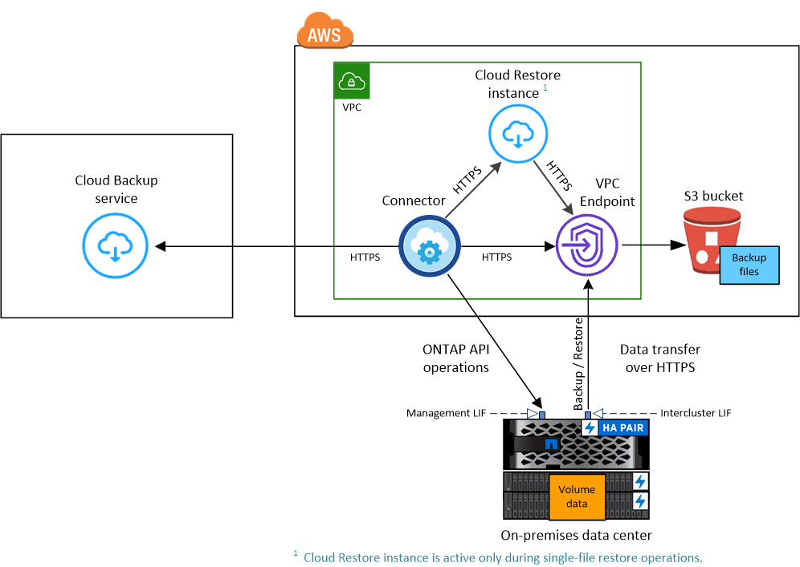
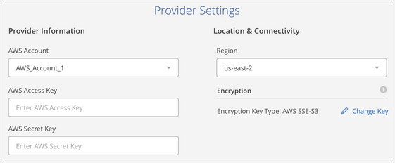
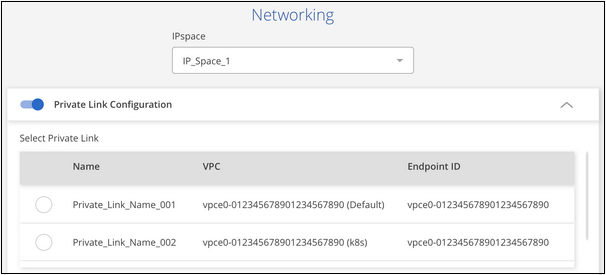
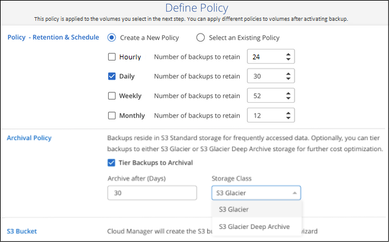

请求文档变更
请求文档变更 在 GitHub 上编辑
在 GitHub 上编辑 提供者指南
提供者指南将内部 ONTAP 数据备份到 Amazon S3
完成几个步骤，开始将数据从内部 ONTAP 系统备份到 Amazon S3 存储。
请注意， " 内部 ONTAP 系统 " 包括 FAS ， AFF 和 ONTAP Select 系统。
快速入门
按照以下步骤快速入门。本主题的以下各节提供了每个步骤的详细信息。
选择是使用公有 S3 端点将内部 ONTAP 集群直接连接到 AWS S3 ，还是使用 VPN 或 AWS Direct Connect 并通过专用 VPC 端点接口将流量路由到 AWS S3 。
如果您已在 AWS VPC 中部署了 Connector ，则可以随时完成所有操作。如果没有，则需要在 AWS 中创建连接器，以便将 ONTAP 数据备份到 AWS S3 存储。您还需要自定义 Connector 的网络设置，以便它可以连接到 AWS S3 。
在 Cloud Manager 中发现您的 ONTAP 集群，验证集群是否满足最低要求，并自定义网络设置，以便集群可以连接到 AWS S3 。
为 Connector 设置权限，以便创建和管理 S3 存储分段以及使用还原实例还原数据。并为内部部署 ONTAP 集群设置权限，以便可以将数据读写到 S3 存储分段。
或者，您也可以为数据加密设置自己的自定义管理密钥，而不是使用默认的 Amazon S3 加密密钥。 了解如何让 AWS S3 环境做好接收 ONTAP 备份的准备。
选择工作环境，然后单击右侧面板中备份和还原服务旁边的 * 启用 > 备份卷 * 。然后，按照设置向导定义默认备份策略和要保留的备份数，并选择要备份的卷。
连接选项的网络图
在配置从内部 ONTAP 系统到 AWS S3 的备份时，您可以使用两种连接方法。
-
公有 连接—使用公有 S3 端点将 ONTAP 系统直接连接到 AWS S3 。
-
专用连接—使用 VPN 或 AWS Direct Connect ，并通过使用专用 IP 地址的 VPC 端点接口路由流量。
下图显示了公有 连接方法以及组件之间需要准备的连接：

下图显示了专用连接方法以及组件之间需要准备的连接：

请注意，在云中部署 Cloud Restore 实例时，它与 Connector 位于同一子网中。
准备您的连接器
Cloud Manager Connector 是 Cloud Manager 功能的主要软件。需要使用连接器来备份和还原 ONTAP 数据。
创建或切换连接器
如果您已在 AWS VPC 中部署了 Connector ，则可以随时完成所有操作。如果没有，则需要在 AWS 中创建新的连接器，以便将 ONTAP 数据备份到 AWS S3 存储。您不能使用部署在内部或部署在其他云提供商中的 Connector 。
连接器网络连接要求
-
确保安装 Connector 的网络启用以下连接：
-
通过端口 443 与 Cloud Backup Service 建立 HTTPS 连接
-
通过端口 443 与 S3 对象存储建立 HTTPS 连接
-
通过端口 443 与 ONTAP 集群管理 LIF 建立 HTTPS 连接
-
-
（可选）启用连接到 S3 的 VPC 端点接口。如果从 ONTAP 集群到 VPC 具有直接连接或 VPN 连接，并且您希望连接器和 S3 之间的通信保持在 AWS 内部网络中，则需要此功能。 请参见如何设置 VPC 端点接口。
准备 ONTAP 集群
在 Cloud Manager 中发现您的 ONTAP 集群
您需要先在 Cloud Manager 中发现内部 ONTAP 集群，然后才能开始备份卷数据。要添加集群，您需要知道集群管理 IP 地址和管理员用户帐户的密码。
ONTAP 要求
集群网络连接要求
-
集群需要从 Connector 到集群管理 LIF 的入站 HTTPS 连接。
-
托管要备份的卷的每个 ONTAP 节点都需要一个集群间 LIF 。这些集群间 LIF 必须能够访问对象存储。
集群通过端口 443 从集群间 LIF 启动出站 HTTPS 连接到 Amazon S3 存储，以执行备份和还原操作。ONTAP 在对象存储中读取和写入数据—对象存储从不启动，它只是响应。
-
集群间 LIF 必须与 _IP 空间 _ 关联， ONTAP 应使用此 _IP 空间 _ 连接到对象存储。 "了解有关 IP 空间的更多信息"。
设置 Cloud Backup 时，系统会提示您使用 IP 空间。您应选择与这些 LIF 关联的 IP 空间。这可能是您创建的 " 默认 "IP 空间或自定义 IP 空间。
如果您使用的 IP 空间与 " 默认 " 不同，则可能需要创建静态路由才能访问对象存储。
-
必须已为卷所在的 Storage VM 配置 DNS 服务器。请参见操作说明 "为 SVM 配置 DNS 服务"。
-
如有必要，请更新防火墙规则，以允许通过端口 443 从 ONTAP 到对象存储的 Cloud Backup 连接以及通过端口 53 （ TCP/UDP ）从 Storage VM 到 DNS 服务器的名称解析流量。
-
（可选）如果在 AWS 中使用专用 VPC 接口端点进行 S3 连接，则要使用 HTTPS/443 ，您需要将 S3 端点证书加载到 ONTAP 集群中。 请参见如何设置 VPC 端点接口并加载 S3 证书。
验证许可证要求
-
在为集群激活Cloud Backup之前、您需要从AWS订阅按需购买(PAYGO) Cloud Manager Marketplace产品、或者从NetApp购买并激活Cloud Backup BYOL许可证。这些许可证适用于您的帐户，可在多个系统中使用。
-
对于 Cloud Backup PAYGO 许可，您需要订阅 "AWS Cloud Manager Marketplace 产品" 使用Cloud Backup。Cloud Backup 的计费通过此订阅完成。
-
对于 Cloud Backup BYOL 许可，您需要 NetApp 提供的序列号，以便在许可证有效期和容量内使用此服务。 "了解如何管理 BYOL 许可证"。
-
-
您需要为备份所在的对象存储空间订阅 AWS 。
您可以在所有地区创建从内部系统到 Amazon S3 的备份 "支持 Cloud Volumes ONTAP 的位置"；包括 AWS GovCloud 地区。您可以在设置服务时指定要存储备份的区域。
准备 AWS 环境
设置 S3 权限
您需要配置两组权限：
-
Connector 创建和管理 S3 存储分段以及使用还原实例还原数据的权限。
-
内部 ONTAP 集群的权限，以便可以将数据读写到 S3 存储分段。
-
确认以下 S3 权限（从最新版本开始） "Cloud Manager 策略"）是为 Connector 提供权限的 IAM 角色的一部分。
{ "Sid": "backupPolicy", "Effect": "Allow", "Action": [ "s3:DeleteBucket", "s3:GetLifecycleConfiguration", "s3:PutLifecycleConfiguration", "s3:PutBucketTagging", "s3:ListBucketVersions", "s3:GetObject", "s3:DeleteObject", "s3:PutObject", "s3:ListBucket", "s3:ListAllMyBuckets", "s3:GetBucketTagging", "s3:GetBucketLocation", "s3:GetBucketPolicyStatus", "s3:GetBucketPublicAccessBlock", "s3:GetBucketAcl", "s3:GetBucketPolicy", "s3:PutBucketPublicAccessBlock", "s3:PutEncryptionConfiguration", "athena:StartQueryExecution", "athena:GetQueryResults", "athena:GetQueryExecution", "glue:GetDatabase", "glue:GetTable", "glue:CreateTable", "glue:CreateDatabase", "glue:GetPartitions", "glue:BatchCreatePartition", "glue:BatchDeletePartition" ], "Resource": [ "arn:aws:s3:::netapp-backup-*" ] },如果您使用 3.9.15 或更高版本部署了 Connector ，则这些权限应已属于 IAM 角色。否则，您需要添加缺少的权限。具体来说就是 "Athena" 和 "glue" 权限，因为它们是搜索和还原所必需的。请参见 "AWS 文档：编辑 IAM 策略"。
-
将以下 EC2 权限添加到为 Connector 提供权限的 IAM 角色中，以便它可以启动，停止和终止用于浏览和还原操作的 Cloud Restore 实例：
"Action": [ "ec2:DescribeInstanceTypeOfferings", "ec2:StartInstances", "ec2:StopInstances", "ec2:TerminateInstances" ], -
激活此服务时，备份向导将提示您输入访问密钥和机密密钥。这些凭据将传递到 ONTAP 集群，以便 ONTAP 可以将数据备份和还原到 S3 存储分段。为此，您需要创建具有以下权限的 IAM 用户：
{ "Version": "2012-10-17", "Statement": [ { "Action": [ "s3:GetObject", "s3:PutObject", "s3:DeleteObject", "s3:ListBucket", "s3:ListAllMyBuckets", "s3:GetBucketLocation", "s3:PutEncryptionConfiguration" ], "Resource": "arn:aws:s3:::netapp-backup-*", "Effect": "Allow", "Sid": "backupPolicy" } ] }请参见 "AWS 文档：创建角色以向 IAM 用户委派权限" 了解详细信息。
验证 Cloud Restore Internet 访问
如果您的虚拟或物理网络使用代理服务器访问 Internet ，请确保 Cloud Restore 实例具有出站 Internet 访问权限，以便与以下端点联系。
| 端点 | 目的 |
|---|---|
http://amazonlinux.us-east-1.amazonaws.com/2/extras/docker/stable/ x86_64 或 4bf88ee77c395ffe1e0c3ca68530dfb3a683ec65a4a1ce9c0ff394be50e922b2/ |
适用于 Cloud Restore 实例 AMI 的 CentOS 软件包。 |
提供 Docker 引擎软件包。 |
|
http://cloudmanagerinfraprod.azurecr.io https://cloudmanagerinfraprod.azurecr.io |
Cloud Restore 实例映像存储库。 |
设置 Amazon S3 加密（可选）
您可以在备份激活向导中为数据加密选择自己的自定义管理密钥，而不是使用默认的 Amazon S3 加密密钥。在这种情况下，您需要已设置加密受管密钥。 "了解如何使用您自己的密钥"。
设置 VPC 端点接口（可选）
如果您希望通过公有 Internet 从内部数据中心到 VPC 建立更安全的连接，可以在备份激活向导中选择 AWS PrivateLink 连接。如果您要通过 VPN 或 AWS Direct Connect 连接内部系统，则必须使用此功能。
-
使用 Amazon VPC 控制台或命令行创建接口端点配置。 "请参见有关使用适用于 Amazon S3 的 AWS PrivateLink 的详细信息"。
-
修改与 Cloud Manager Connector 关联的安全组配置。您必须将此策略更改为 "Custom" （自定义）（从 "Full Access" ），并且必须将其更改为 "Custom" （自定义） 从备份策略添加 S3 权限 如前面所示。

如果您使用端口 80 （ HTTP ）与专用端点进行通信，则会对您进行所有设置。您现在可以在集群上启用 Cloud Backup 。
如果您使用端口 443 （ HTTPS ）与专用端点进行通信，则必须从 VPC S3 端点复制证书并将证书添加到 ONTAP 集群中，如接下来的 4 个步骤所示。
-
从 AWS 控制台获取端点的 DNS 名称。

-
从 VPC S3 端点获取证书。您可以通过执行此操作 "登录到托管 Cloud Manager Connector 的 VM" 并运行以下命令。输入端点的 DNS 名称时，在开头添加 " 分段 " ，替换 "* " ：
[ec2-user@ip-10-160-4-68 ~]$ openssl s_client -connect bucket.vpce-0ff5c15df7e00fbab-yxs7lt8v.s3.us-west-2.vpce.amazonaws.com:443 -showcerts -
从此命令的输出中，复制 S3 证书的数据（包括开始 / 结束证书标记之间的所有数据）：
Certificate chain 0 s:/CN=s3.us-west-2.amazonaws.com` i:/C=US/O=Amazon/OU=Server CA 1B/CN=Amazon -----BEGIN CERTIFICATE----- MIIM6zCCC9OgAwIBAgIQA7MGJ4FaDBR8uL0KR3oltTANBgkqhkiG9w0BAQsFADBG … … GqvbOz/oO2NWLLFCqI+xmkLcMiPrZy+/6Af+HH2mLCM4EsI2b+IpBmPkriWnnxo= -----END CERTIFICATE----- -
登录到 ONTAP 集群命令行界面并使用以下命令应用您复制的证书（替换您自己的 Storage VM 名称）：
cluster1::> security certificate install -vserver cluster1 -type server-ca Please enter Certificate: Press <Enter> when done
启用 Cloud Backup
可随时直接从内部工作环境启用 Cloud Backup 。
-
在 Canvas 中，选择工作环境，然后单击右侧面板中备份和还原服务旁边的 * 启用 > 备份卷 * 。

-
选择 Amazon Web Services 作为您的提供商，然后单击 * 下一步 * 。
-
输入提供程序详细信息并单击 * 下一步 * 。
-
用于存储备份的 AWS 帐户， AWS 访问密钥和机密密钥。
访问密钥和机密密钥适用于您创建的 IAM 用户，用于为 ONTAP 集群授予对 S3 存储分段的访问权限。
-
要存储备份的 AWS 区域。
-
您是使用默认 Amazon S3 加密密钥，还是从 AWS 帐户中选择您自己的客户管理密钥来管理数据加密。 ("了解如何使用您自己的密钥"）。

-
-
如果您的帐户没有Cloud Backup许可证、此时将提示您选择要使用的充电方法类型。您可以订阅AWS提供的按需购买(PAYGO) Cloud Manager Marketplace产品(如果您有多个订阅、则需要选择一个)、或者从NetApp购买并激活Cloud Backup BYOL许可证。 "了解如何设置Cloud Backup许可。"
-
输入网络连接详细信息并单击 * 下一步 * 。
-
要备份的卷所在的 ONTAP 集群中的 IP 空间。此 IP 空间的集群间 LIF 必须具有出站 Internet 访问权限。
-
或者，选择是否使用先前配置的 AWS PrivateLink 。 "请参见有关使用适用于 Amazon S3 的 AWS PrivateLink 的详细信息"。

-
-
输入默认备份策略详细信息，然后单击 * 下一步 * 。
-
定义备份计划并选择要保留的备份数。 "请参见您可以选择的现有策略列表"。
-
使用 ONTAP 9.10.1 及更高版本时，您可以选择在一定天数后将备份分层到 S3 Glacier 或 S3 Glacier 深度归档存储，以进一步优化成本。 "了解有关使用归档层的更多信息"。

-
-
在选择卷页面中，使用默认备份策略选择要备份的卷。如果要为某些卷分配不同的备份策略，可以创建其他策略并稍后将其应用于这些卷。
-
要备份所有卷，请选中标题行（
 ）。
）。 -
要备份单个卷，请选中每个卷对应的框（
 ）。
）。
如果希望将来添加的所有卷都启用备份，只需选中 " 自动备份未来卷 …" 复选框即可。如果禁用此设置，则需要手动为未来的卷启用备份。
-
-
单击 * 激活备份 * ， Cloud Backup 将开始对卷进行初始备份。
Cloud Backup 将开始对每个选定卷进行初始备份，此时将显示卷备份信息板，以便您可以监控备份的状态。
您可以 "启动和停止卷备份或更改备份计划"。您也可以 "从备份文件还原整个卷或单个文件" 连接到 AWS 中的 Cloud Volumes ONTAP 系统或内部 ONTAP 系统。